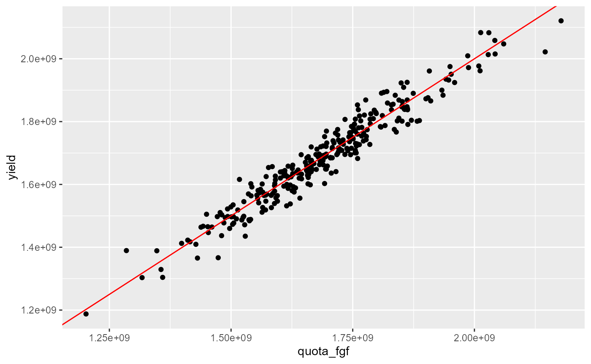
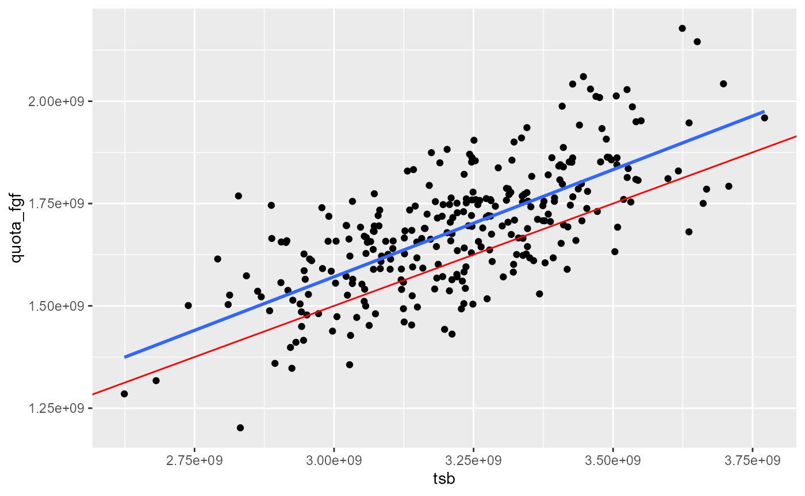
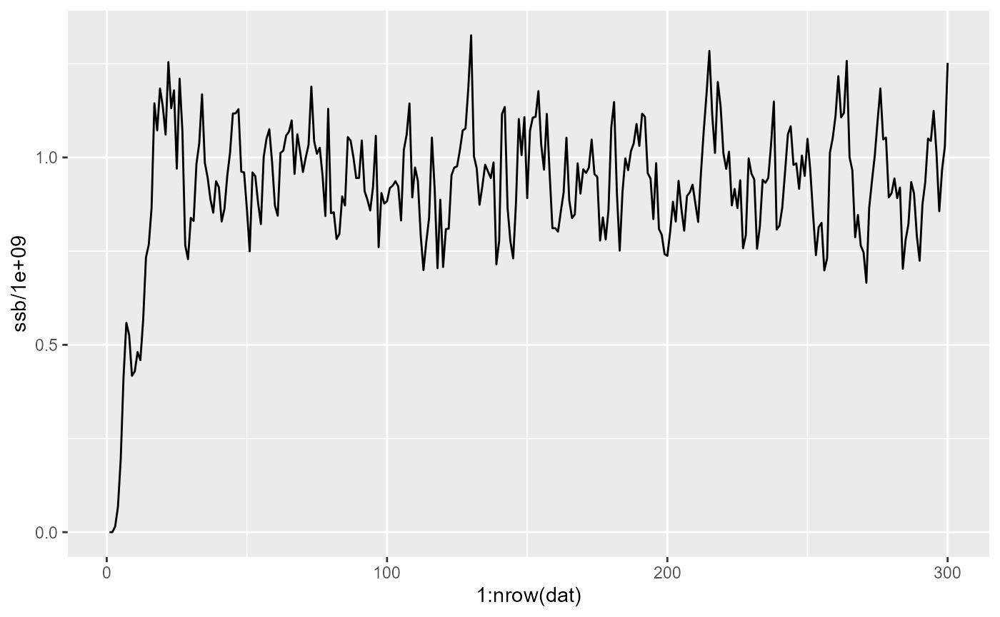

Fished Population and Stock Analysis
Jaideep
2025-12-04
fished_population_stock.RmdFishery System Setup
To simulate a fishery, i.e., a fished population, we need a Stock to harvest, a Fleet that harvests it, and a Fishery that manages this interaction. A Fishery also contains a hypothetical unfished population, separate from the actual population that we will fish.
Fish and population parameters are the same as in the case of an unfished population. Fleet parameters must be defined in a separate parameters file. Each fleet needs its own parameters file.
Let us now set up the fishery system using parameter files for fleet and fish, and inspect initial parameters.
# define parameter files
params_file_fleet = here::here("params/fleet_1_params.ini")
params_file_fish = here::here("params/cod_params.ini")
# Create a fleet and read parameters
fleet = new(Fleet)
fleet$readParams(params_file_fleet, T)
fleet$par$print()
# Create a prototype fish to construct the population
fish = new(Fish, params_file_fish)
# Craeate the fishery. Note that we do not need to explicitly create a population - it is contained within the fishery
fishery = new(Fishery, params_file_fish, fish);
fishery$par$print()Fishery Simulation
Configure the fishery:
- set contol parameters, such as harvest proportion and min size limit
- add the fleet to the fishery
- A fishery simulation requires an estimate of the carrying capacity of the ocean, which is computed by simulating a hypothetical unfished population to equilibrium. This unfished population is also implicitly included in the Fishery class.
- Initialize the fishery - this creates fish in the real fish population.
fishery$set_harvestProp(0.5);
fishery$addFleet(params_file_fleet, T);
# Simulate the Fishery's hypothetical unfished population to equilibrium
v = fishery$equilibriateNaturalPopulation(5.61, 2e6);
# Initialize the
fishery$init(1000, 0, 5.61);
# Just a demo calc of the initial quota corresponding to the set defined harvest proportion. The Fishery will recalculate this every year.
quota = fishery$calc_quota(5.61);
cat("Quota: ", quota, '\n')## Quota: 600228.7Running and Visualizing Simulation
Simulate the fishery over time and visualize key outputs.
dat <- fishery$simulate(45, 0.55, 300, 0, 5.61, T, here::here("fishery_output/age_dist_pred.csv"))
dat |> head()## ssb tsb maturity quota_fgf yield effort
## 1 0 0 NaN 5908047 6103354 0
## 2 0 0 NaN 33614539 48577494 0
## 3 14931417 784202660 0.02114804 149167941 151122216 0
## 4 67640089 1575607147 0.04797048 653714083 660750429 0
## 5 195773758 2081257667 0.10263158 1198779550 1217286201 0
## 6 414948056 2010792087 0.19305019 1259638400 1270915497 0Quota (FGF) vs Yield
This plot compares the feeding ground fishery quota to the yield, excluding the first 10 iterations.
dat |>
slice(-(1:10)) |>
ggplot(aes(x=quota_fgf, y=yield)) +
geom_point() +
geom_abline(slope=1, intercept=0, color="red")
TSB vs Quota (FGF)
This plot shows the relationship between total stock biomass and feeding ground fishery quota. Slope should be equal to harvest proportion.
dat |>
slice(-(1:10)) |>
ggplot(aes(x=tsb, y=quota_fgf)) +
geom_point() +
geom_smooth(method="lm", se=F, formula = y ~ x-1) +
geom_abline(slope=0.5, intercept=0, color="red")
SSB Over Simulation
This plot tracks spawning stock biomass over the course of the simulation.
dat |>
ggplot(aes(x=1:nrow(dat), y=ssb/1e9)) +
geom_line()